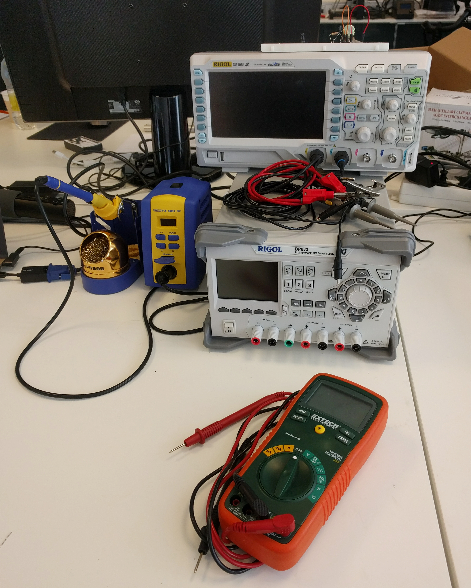
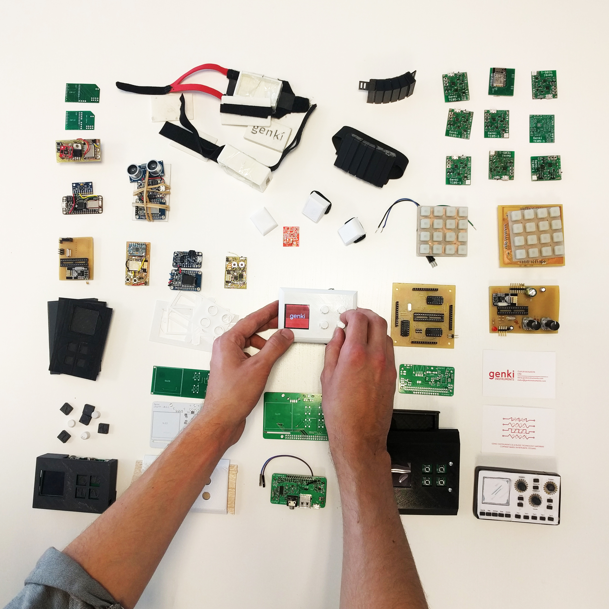

This post is a brief overview of hardware (HW) prototyping. It is meant for individuals or teams that are starting their journey into the magical forest of HW prototyping. The topic is huge and it is impossible to cover all aspects of it in a blog post. Your situation, needs and requirements will also be different from ours. This is the post I wish I had read two years ago before I finished my undergrad degree in electrical engineering.
tl;dr
- Learn the basic skills - circuit theory, how to solder, design PCBs and MCU programming
- Set up a R&D lab
- Get a prototype working first & iterate quickly
- Avoid making circuit boards at home at all cost
- If you speak open source you move faster
- Using Arduino is like drawing with crayons. It is simple and fun but you won't be making no Mona Lisa
First things first
Doing HW prototyping involves a large skill set. The knowledge you need can be pretty hard to come by if you don't know where to look. Most of the skills you will have to learn on you own. Diving head-first is the only way to overcome the initial hurdles.
To a total beginner I would recommend that you find a makerspace, fablab or something similar to help you with the absolute basics. In my experience you will find friendly people there who will gladly teach you how to breadboard components, solder circuits, program microcomputers, make simple enclosures etc. It is also important to get familiar with basic circuit theory. You're lucky there's plenty of material online!
When learning to solder start with through-hole components and then you can move to surface mount components when you are ready. Now we have a reflow oven in our lab so we don't have to solder as much, highly recommended if you dislike soldering.
Studying electrical engineering surely helped when I started to dabble with hardware, but to tell you the truth most of the stuff I learned I did by doing and not being afraid of asking questions when I got stuck. Here are resources that I found helpful when starting and use regularly even today:
- reddit - I have asked questions all over the place, /r/hwstartups, /r/askelectronics, /r/programming. More often than not the answers there are useful and people are nice.
- eevblog.com/forum - Here's where the die-hard electronics nerds lay.
Note: Be skeptical! You need to be skeptical of everything you read online. Even if the material comes from people who are trying to help. If you are working with IC components always try to find the schematics first. We like to use Octopart for that.
Taking time to learn the basics is very important. Failing is a crucial step in the learning process, there's nothing bad about it. Fail often and fast and you will learn.
Setting up a R&D lab
After learning the basics you may be ready to move quickly. So that we could iterate as quickly as possible we decided we needed to set up a R&D lab. That meant getting the adequate electronics equipment with the budget that we had, which was around $2.5k at the time. Today the lab that we run consists of the following gear:
- Bench power supply - Rigol DP832
- Digital Oscilloscope - Rigol DS1054Z
- Voltmeter - Extech 430
- Soldering station - Hakko FX951
- Reflow oven - Modified desktop oven with MCU inside for temperature regulation

Along with this we have a large selection of tweezers, other handy tools and components. All this is necessary as you dive deeper into HW prototyping and electronics.
Hardware prototyping is time consuming
Developing hardware is notoriously hard, and for good reason. The steps involved are many and the learning curve is often steep. Understanding which steps you should outsource and which steps you can successfully do on your own is crucial if you want to succeed.
At first you should always find the shortest path to validate that your notion of an idea is achievable. That can mean buying individual modules of sites like Adafruit and breadboarding them.
Only after you have validated that the idea makes sense on a breadboard you can start to think about designing your own PCB. Note: Getting PCBs manufactured is the most time consuming step in the process of hardware prototyping phase. This you should be aware of and plan your steps so that you can use the time when the PCBs are getting manufactured for something useful.
The PCB design software that we have found most noob-friendly was CadSoft Eagle. Eagle comes in a free, open source version and the community surrounding it is very friendly to newcomers. Jeremy Blum has a wonderful series of tutorials on the subject available for free on youtube:
After you have designed and double-checked your PCB designs, you are ready to have them manufactured. DIY PCBs can be nice if you know that you only want one copy, have a single sided PCB with through-hole components and want to actively waste your time. We have wasted many, many hours on making our own PCBs at home and if you have the money I cannot overstate the importance of not doing so.
In the past we have used Seed Studio to manufacture our PCBs and we have been very happy with them so far. OSH Park is another manufacture of PCB that is popular with startups. To source parts we have used Mouser from day 1 and never had any problems with their service. They even offer free world-wide shipping for all orders over $100.
Open source
One of the biggest, if not the biggest, advantage we had as a startup was our ability to speak open source. That, more than anything else, means that you understand where to look for code and resources that may help you. https://github.com/ is a great resource for finding similar project to get inspiration for your project.
Just keep in mind that some of the code you borrow may have licenses associated with it. If you do that, then you're good to go!
Arduino as a tool
Using the Arduino development platform is great for throwing together simple prototypes. It can get you a long way but recently we felt that it was holding us back. The IDE has a terrible design and more importantly the code runs slower than when you are in charge of the toolchain all the way from source code to flashing the firmware. The more control over your hardware you have, the more precise your outcome will be.
Good luck
This was a quick post about the skills & resources you need to do hardware prototyping today. As with most things, getting good at HW prototyping takes patience and effort. Since we were able to get started, so can you.
If you have any questions or have something to add to this post please don't hesitate to ask below. Thank you for reading, good luck and have fun!

This post is written by Olafur Bogason, CTO of Genki Instruments. Genki is a design driven music technology startup from Reykjavik, Iceland. genkiinstruments.com